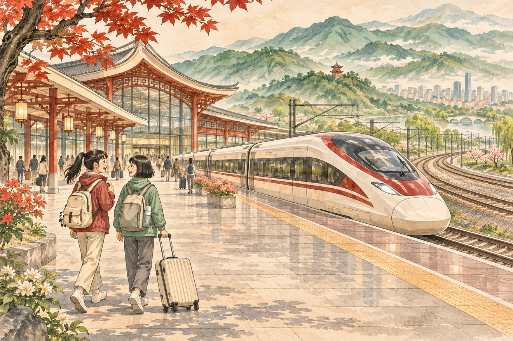

Расскажи о планах
周末你打算去哪儿？
Показать пример
我打算去公园。
Я собираюсь в парк.
Урок 9 60 минут
从家到火车站
Научись спрашивать о дороге, выбирать транспорт и рассказывать, сколько времени займёт поездка.
Начать урок
下一站 Следующая станция01 / Разминка 5 мин
Посмотри, что планирует героиня, и расскажи о своих планах. Затем сравни метро и скоростной поезд.
Расскажи о планах
周末你打算去哪儿？
我打算去公园。
Я собираюсь в парк.
Сравни транспорт
高铁和地铁，哪个更快？
高铁比地铁快。
Скоростной поезд быстрее метро.
02 / Слова 10 мин
Нажми ▶, повтори слово и скажи пример целиком.
Маршрут и время
Начни с точки отправления, назови место назначения и добавь, сколько займёт дорога.
从我家到学校要十分钟。
Расстояние
Назови место, о котором говоришь, затем ориентир. В конце скажи, близко это или далеко.
学校离我家很近。
03 / Аудирование 8 мин
Посмотри историю и послушай реплики. На втором просмотре можно открыть субтитры.
Кадр 1 из 4
04 / Практика 15 мин
Прочитай карту и выбери ответ. Затем собери три фразы, как в прошлый раз.
05 / Диалог 17 мин
Ответь героине из видео, затем попробуй вопросы ниже. Поменяйтесь ролями и придумайте свой маршрут.
Финальная задача
Выбери два места. Спроси, далеко ли одно от другого и как туда добраться. Затем перескажи ответ собеседника в 2–3 фразах.
你打算怎么去……？
Как ты собираешься добраться до…?
……离……远吗？
… далеко от …?
从……到……要多久？
Сколько времени займёт дорога от … до …?
Что получилось сказать вслух?
Итог и домашнее задание 5 мин
Нарисуй путь от дома до любого места. Запиши голосом три фразы: куда собираешься, как поедешь и сколько времени займёт дорога. Подготовь один вопрос о поездке для следующего интервью.
Ответь на задания, чтобы увидеть результат.
Устный блок: 0 из 3 по твоим отметкам.
Отметки сохраняются в этом браузере.Связь с прошлым уроком. Начните с двух свободных ответов на 打算 и 比. В «Говорилке 3.0» эти конструкции уже были, а здесь пригодятся при выборе транспорта. Сборка фраз закрепляет знакомый порядок слов в новой теме.
Аудирование. Сначала пройдите четыре кадра с закрытыми субтитрами. Спросите, какие места и виды транспорта Лера узнала. Затем откройте текст и разберите одну трудную реплику. Если в браузере нет китайского голоса, реплики можно прочитать с экрана преподавателя.
Что услышать в финале. Один вопрос с 离, один ответ с 从…到…要… и уточнение про транспорт. Обратите внимание, сохраняет ли Лера оба места и ставит ли время после 要. При необходимости дайте каркас и попросите заменить места на свои.
К следующему интервью. Возьмите вопрос про транспорт или расстояние из домашнего задания. Если основная тема уже уверенно получается, устно добавьте вопрос про опыт 你坐过高铁吗？ и короткие ответы 我坐过。/ 我没坐过。